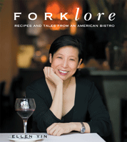

<body bgcolor="#FFFFFF" text="#000000" link="#0000FF" vlink="#CC0000" alink="#CC0000"><center><hr width="350" size="1" align="center" noshade>True-life tales and scrumptious recipes from Philly's trendsetting restaurant<hr width="350" size="1" align="center" noshade><p><a href="https://cdcshoppingcart.uchicago.edu/Cart/ChicagoBook.aspx?ISBN=9781592136513&&PRESS=temple" target="_top">Buy this book!</a> | <a href="https://cdcshoppingcart.uchicago.edu/Cart/Cart.aspx?PRESS=temple" target="_top">View Cart</a> | <a href="https://cdcshoppingcart.uchicago.edu/Cart/Cart.aspx?PRESS=temple" target="_top">Check Out</a></p><p></p></center><!--none//--><h1>Forklore</h1>
<H2>Recipes and Tales from an American Bistro</H2>
<h3>Ellen Yin</h3>
<P>cloth 1592136516 $50.50, Sep 07, <FONT COLOR=#990033>Available</FONT>
<br>Electronic Book 1592136532 $50.50 <FONT COLOR=#990033>Available</FONT>
<BR> 288 pp
8x9.25
115&nbsp;color&nbsp;illustrations
</P><h3 align="center"><P><font color="#996633">Winner of a Pewter award in the Gold Ink Awards in the cookbook category,
2008</font></P>
<P><font color="#996633">Winner of the Silver ADDY Award — Publication Design — Editorial Spread or Feature,
2008</font></P>
<P><font color="#996633">Winner of the Gold ADDY Award — Publication Design — Cover,
2008</font></P>
</H3>
<BLOCKQUOTE><I>"The name should tell you what the restaurant is all about: New American fare without frippery, while the place is small … it serves food filled with big ideas and big flavors."<br>&#151<b>Bon Appétit</b></I></BLOCKQUOTE>
<p>Co-founded in 1997 by Ellen Yin, Fork, a casual but sophisticated restaurant nestled in Old City, has become one of Philadelphia's top dining establishments. The eclectic, but distinctly American style of cooking--influenced by many ethnicities--is, Yin describes, "New American bistro-style cuisine." Think pan-seared five spice dusted chicken livers aside spinach salad with caramelized onions, or braised lamb shank in port wine-orange jus with creamy mashed boniato and sautéed swiss chard. Such are the delicacies Yin has been serving up for the past decade.
<p>
<i>Forklore</i> tells the tale of this extraordinary dining establishment, while dishing out some delectable recipes. Yin brings to her writing the same qualities of careful attention and lively enthusiasm that characterize her best dishes. With great gusto, she describes how she fell in love with food, how Fork was born, and how her chefs have helped to create its unique cuisine. And throughout her story she liberally sprinkles recipes-simple, delicious, and easy to cook at home-that represent the best of New American Bistro cooking. There are nearly 100 recipes in all and every one has a story, served up by Yin with relish and delight.
<p>
For anyone who likes a juicy story, well seasoned with zesty anecdotes and mouthwatering recipes, <i>Forklore</i> is a treat.
<BR>&nbsp;<h2>Excerpt</h2><P>Excerpt available at <a href="http://www.temple.edu/tempress">www.temple.edu/tempress</a></p>
<BR>&nbsp;<h2>Reviews</h2>
<p><i>"Fork has a fixation for freshness worthy of Alice Waters ..."</i><br>&#151<b>R. W. Apple</b>,<i> The New York Times</i>
<p><i>"[T]he definitive … bistro that sets the standard for affordable, stylish dining."</i> <br>&#151<b><i>The Philadelphia Inquirer</i></b>
<p><i>"Fork is one of Philly's greatest assets. For those of us for which Fork is more than an hour away we can now bring a little bit of Fork home with us, beyond the lovely memories. If books were edible I'd start with this one."</i> <br>&#151<b>Max McCalman</b>, author of <i>Cheese: A Connoisseur's Guide to the World's Best</i>
<p><i>"Fork has sparked a revolution in good taste right at the heart of Philadelphia's historic district." </i><br>&#151<b>John Mariani</b>, <i>Wine Spectator</i>
<p><i>"Every city needs an affordable stylish bistro like Fork."</i> <br>&#151<b><i>USA Today</i></b>
<p><i>"Yin is co-owner of Fork, a popular restaurant in Philadelphia’s Old City, and its offshoot, Fork:etc., a gourmet market next door. Fork has just celebrated its tenth anniversary, and Yin’s very personal cookbook offers a heartfelt narrative of the restaurant’s first decade. The 100 recipes are grouped chronologically into such chapters as “Fork Grows Up” and “From Amour to Amore” (there is also a handy listing of recipes by course), and stories about the chefs and other staff, along with Yin’s own culinary adventures, provide the behind-the-scenes story. The book is attractively designed, and there are color photos throughout of the food, the restaurant, and the people involved. For area libraries and where restaurant books are popular."</i> <br>&#151<b><i>Library Journal</i></b>
<BR>&nbsp;<P><p>Offer good until 1/15/09: Receive a free dessert at Fork Restaurant with purchase of Forklore, <a href="1912_coupon.pdf">click here</a></p></P><BR>&nbsp;<br>
<h2>Contents</h2><P>
<P>List of Recipies
<br>Acknowledgements
<br>Introduction: In Search of American Cuisine
<br>1. Fork is Born
<br>2. Fork Grows Up
<br>3. Fourchette: A Bistro at Heart
<br>4. Fork Next Door
<br>5. From Amour to Amore
<br>6. Asian Accents
<br>7. Latino Influences
<br>Coda: Still in Search of American Cuisine
<br>Fork Foundations
<br>Illustration Credits
<br>Index
</P><BR>&nbsp;<H2>About the Author(s)</H2>
<table><tr><td valign="top"><img src="/tempress/authors/1912_au.gif" height="90" width="75"></td><td width="100%" valign="middle"><p><b>Ellen Yin</b> is owner of Fork Restaurant, the acclaimed New American Bistro in Old City, Philadelphia. Since its opening in 1997, Fork has received many regional and national accolades including being named one of the "Best New Restaurants" by <i>Philadelphia</i> magazine and one of Philadelphia's "Top Tables" by<i> Gourmet</i> magazine. In 2004, she expanded Fork to include Fork:etc, a specialty food store with prepared foods, artisanal and gourmet products. Now celebrating its tenth anniversary, Fork continues to delight new visitors from throughout the world as well as its own local fans. Her last cookbook,<i> From Our Restaurant's Kitchen</i>, a compilation of the restaurant's recipes and staff favorites, benefited scholarships for inner city students.</P></td></tr></table>
<BR><H2>Subject Categories</H2>
<p><A HREF="/tempress/general.html" TARGET="_top">General Interest</a>
<BR><A HREF="/tempress/philly.html" TARGET="_top">Philadelphia Region</a>
<BR><A HREF="/tempress/biography.html" TARGET="_top">Biography/Memoir/Autobiography</a>
</p>
<p align="center"><a href="https://cdcshoppingcart.uchicago.edu/Cart/ChicagoBook.aspx?ISBN=9781592136513&&PRESS=temple" target="_top">Buy this book!</a> | <a href="https://cdcshoppingcart.uchicago.edu/Cart/Cart.aspx?PRESS=temple" target="_top">View Cart</a> | <a href="https://cdcshoppingcart.uchicago.edu/Cart/Cart.aspx?PRESS=temple" target="_top">Check Out</a></p><p><font face="Arial" size="1"><a href="copyright.html" onMouseOver="window.status='Web Copyright Policy';return true;" onMouseOut="window.status=''" title="Web Copyright Policy">&copy;</a> 2015 <a href="http://www.temple.edu" target="new" onMouseOver="window.status='Link to Temple University home page';return true;" onMouseOut="window.status=''" title="Link to Temple University home page">Temple University</a>. All Rights Reserved. http://www.temple.edu/tempress/titles/1912_reg.html</font></p>